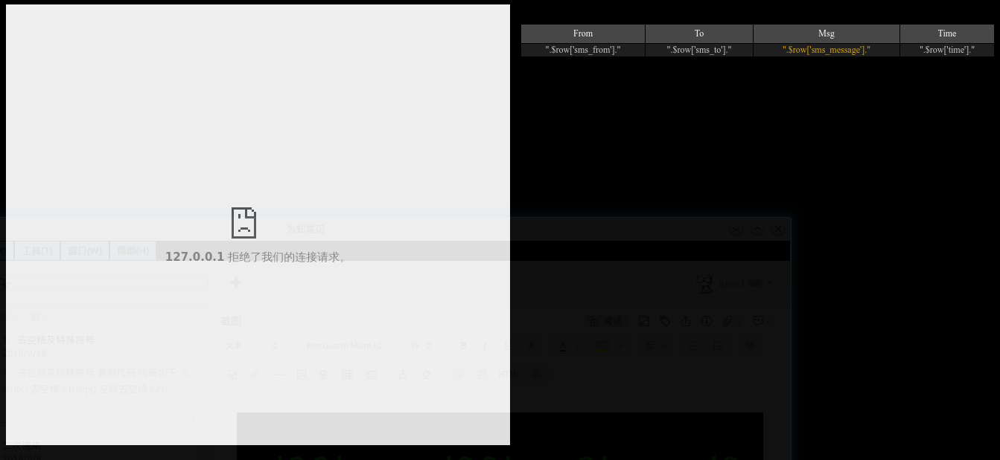

前言
在上一篇博文中简单介绍了使用C118进行短信嗅探，但是每次使用都要来回切换文件夹，先刷固件，再扫描，然后嗅探，最后开wireshark抓包，想想都觉得累，所以很有必要把这些命令简化一下，最好能变成一条命令，于是首先想到了写个shell脚本，把命令按顺序执行，但是仔细一想，这个做法也并没简单到哪去，而且最后还是要通过查看wireshark的数据包才能看到短信内容，有没有一种更直观的方法呢？上网找了一下，找到了le4f大神在github上开源的GSM短信嗅探分析套件．
简单的看了一下源玛，核心部分使用python的struct模块处理wireshark抓到的数据包，通过struct.unpack()方法实现对数据包的解包，再切片成一条条数据写入数据库．尽管能理解个大概，但是一些细节部分还是看的晕头转向，不过不要紧，现在看不懂没关系，总有一天我会~~忘掉它的~~理解它的．现在关注一下如何使用就好
步骤
首先下载le4f前辈GsmSniff项目的源码：
点击前往GsmSniff项目托管地址：传送门
如果下载速度慢可以点击以下地址下载 - 百度网盘:传送门 提取密码：qpvd
下载完成后解压到/home/jeni/GsmSniffer文件夹中，此时该文件夹中内容如下
jeni@JenI ~/GsmSniffer % ls gnuarm gsmsniff-master libosmocore osmocom-bb
gsmsniff-master文件夹内文件说明
.
├── gsmhack
│ ├── demo
│ │ ├── sms.sql
│ │ └── test.py
│ ├── scan.sh(调用OsmocomBB扫描基站)
│ ├── sniff.sh(调用OsmocomBB嗅探基站短信)
│ └── start_osmbb.sh(调用OsmocomBB载入系统)
├── readme.md(项目说明)
├── smshack.py(核心代码)
├── smssniff.mov(演示视频)
└── web(15年3月将之前的web页面也开源)
├── bootstrap.min.css
├── bootstrap-theme.min.css
├── includeme.php
├── index.php
├── startweb.sh
└── style.css
了解了各文件的作用之后，开始进行安装和相关配置．
由于需要解析php,并会用到mysql数据库，因此需要先搭建一个web服务器．网上针对apache搭建web服务器的教程有很多，所以这里使用nginx搭建以便可以学到新知识．
首先安装nginx,php,php-fpm,mariadb,其中mariadb由开源社区维护，是MySQL的开源实现
sudo pacman -S nginx php php-fpm mariadb
安装完成后配置MySQL
mysql_install_db --user=mysql --basedir=/usr --datadir=/var/lib/mysql systemctl start mysqld mysql_secure_installation systemctl restart mysqld systemctl enable mysqld
这时就可以的登陆到mysql了，用户root，默认密码为空,直接回车就好，登陆成功后更改root密码.
mysql -u root -p
mysql> update mysql.user set password = PASSWORD('123456') where user='root';
mysql> flush privileges;
由于这里是本地搭建测试服务器，所以可以不添加低权限mysql用户
再配置nginx,编辑nginx.conf文件，更改网站根目录并增加对php的支持
sudo nano /etc/nginx/nginx.conf
#在server模块内添加网站根目录
server {
listen 80;
server_name localhost;
root /home/jeni/GsmSniffer/gsmsniff-master/web;
...
#去掉下列内容行首的#号，并修改为以下内容
location ~ .php$ {
fastcgi_pass unix:/run/php-fpm/php-fpm.sock;
fastcgi_index index.php;
fastcgi_param SCRIPT_FILENAME $document_root$fastcgi_script_name;
include fastcgi_params;
}
开启nginx服务
systemctl start nginx systemctl enable nginx
配置php.ini，将网站根目录加入到open_basedir内，并开启mysql数据库拓展
open_basedir = /usr/share/webapps/:/srv/http/:/home/:/tmp/:/usr/share/pear/:/home/jeni/GsmSniffer/gsmsniff-master/web/ #取消Dynamic Extensions下mysql的拓展（去掉以下内容行首的#） extension=mysqli.so extension=pdo_mysql.so
设置开机启动php-fpm
systemctl start php-fpm systemctl enable php-fpm
这时nginx便可以解析php了，web服务器也就初步搭建完成了．写一个测试文件测试是否成功,创建/home/jeni/GsmSniffer/gsmsniff-master/web/phpinfo.php,内容为
<?php phpinfo(); ?>
浏览器访问127.0.0.1/phpinfo.php，如果成功显示php探针，则说明web服务器搭建成功
接下来就是针对gsmsniff-master文件夹内源码的更改，首先更改核心文件smshack.py
第一处
class Database: host = 'localhost' user = 'root' password = '123456' db = 'smshack'第二处(更改下列内容中所有路径为自己操作系统中的路径)
try: child1 = subprocess.Popen(["/home/jeni/Gsmsniffer/gsmsniff-master/gsmhack/start_osmbb.sh"],stderr=open('/home/jeni/Gsmsniffer/gsmsniff-master/gsmhack/start.err','w'),stdout=open('/home/jeni/Gsmsniffer/gsmsniff-master/gsmhack/start.log','w')) print "[+]Load PID: " + str(child1.pid) print "[]Plugin C118,Click the Button Please" flag = raw_input("[!]Osmocom-BB Load Done?(Y/N)") if flag.lower() == "y": print "[]Loading Sniffer Done.." else: print "[-]Loading Error." exit(1) print "[!]Scaning ..." child2 = subprocess.Popen(["/home/jeni/Gsmsniffer/gsmsniff-master/gsmhack/scan.sh"],stderr=subprocess.PIPE,stdout=subprocess.PIPE) print "[+]Load PID: " + str(child2.pid) scanlog = child2.communicate() child2.wait() scanloginfo = ";".join(scanlog) scanbase = re.findall(r"ARFCN\=[^)]+)",scanloginfo) for base in scanbase: print "[+]"+base scanarf = raw_input("[]Input ARFCN Num:") print "[!]Sniffing ARFCN: %d.." % int(scanarf) q = Queue.Queue() t = threading.Thread(target=handle_message, name="handle_message_thread", kwargs={'messages':q}) t.daemon = True t.start() s = socket.socket(socket.AF_INET, socket.SOCK_DGRAM) s.bind(('0.0.0.0', 4729)) sniffinfo = ["/home/jeni/Gsmsniffer/osmocom-bb/src/host/layer23/src/misc/ccch_scan","-i","127.0.0.1","-a",scanarf] child3 = subprocess.Popen(sniffinfo,stderr=open('/home/jeni/Gsmsniffer/gsmsniff-master/gsmhack/sniff.err','w'),stdout=open('/home/jeni/Gsmsniffer/gsmsniff-master/gsmhack/sniff.log','w')) print "[+]Load PID: " + str(child3.pid) print "[]%s Start Monitor." % GetCurrentTime() print "[*]Enjoy GSM Sniffing!" while True: data, addr = s.recvfrom(2048) #print data.encode('hex') q.put(data) s.close() except KeyboardInterrupt: try: child1.kill() child2.kill() child3.kill() print "[-]Kill Process Done." except: pass
更改scan.sh文件，更改为
#!/bin/bash cd /home/jeni/GsmSniffer/osmocom-bb/src/host/layer23/src/misc/ ./cell_log -O
更改sniff.sh文件，更改为
#!/bin/bash cd /home/jeni/GsmSniffer/osmocom-bb/src/host/layer23/src/misc/ ./ccch_scan -i 127.0.0.1 -a $1
更改start_osmbb.sh文件，更改为
#!/bin/bash cd /home/jeni/GsmSniffer/osmocom-bb/src/host/osmocon/ ./osmocon -m c123xor -p /dev/ttyUSB0 ../../target/firmware/board/compal_e88/layer1.compalram.bin
修改web目录下的index.php文件，将第175行的用户名修改为自己想要的用户名，密码为自己明文密码md5后的密文，就是说如果你的密码是123456,在此处应修改为49ba59abbe56e057，这样才能顺利登陆
if ( isset($_POST['pass']) & isset($_POST['name']) & @MD5($_POST['pass'])=="49ba59abbe56e057" & @$_POST['name']=="jeni" )
修改includeme.php文件，将文件内的数据库密码设置成自己的密码，并修改第13行
$conn = @mysql_connect("localhost", "root", "123456") or die("Error!");
#第13行<?修改为
<?php
将数据库文件导入mysql
mysql -u root -p 123456 mysql>create database smshack; mysql>use smshack; mysql>source /home/jeni/GsmSniffer/gsmsniff-master/gsmhack/demo/sms.sql
这时对文件的修改也基本完成了，尝试使用浏览器打开网站首页，访问的返回结果应该如下图所示

这是什么鬼，左侧没有终端，右侧显示也不正常，说好的数据和蝴蝶呢．没关系，一次性成功也不现实，让我们来找找原因
首先，网站可以解析php,说明web服务器搭建的没问题,那不显示说明是与数据库的连接问题，但我们命令行登陆mysql，可以查看到表，那又是为什么不能正常显示呢，其实仔细看一下源码就知道怎么回事了，源码中php连接数据库时使用的是mysql_connect()函数，也就是php调用mysql.so,但是php7废弃了这个拓展，所以源码中连接数据库的部分需要自己使用mysqli和pdo_mysql方法改写，因为文件比较少，所以可以自己改写，那假如是个整站cms呢，自己改写岂不是要累死？又想使用php高版本来提升服务器效率，又想保持老的源码可以使用，怎么做呢？这里提供一种在php7中重新使用mysql.so拓展的方法
到下面的地址下载mysql.so拓展的源码
地址：传送门
下载完成后解压
tar xzvf mysql-230a828.tar.gz
使用phpize初始化
cd mysql-230a828 phpize
编译并安装mysql拓展
./configure --with-php-config=/usr/bin/php-config --with-mysql=mysqlnd make && make install sudo cp modules/mysql.so /usr/lib/php/modules/mysql.so
然后编辑/etc/php/php.ini，在拓展模块所在位置添加下面内容
extension=mysql.so
重启nginx服务
systemctl restart nginx
这时访问网站右侧便会显示正常了
接下来解决左侧终端问题，左侧终端调用Python ButterFly库，使用pip进行安装即可
sudo pip install butterfly
以服务形式开启butterfly
sudo systemctl enable butterfly sudo systemctl start butterfly
修改butterfly配置文件,/etc/butterfly/butterfly.conf
host = '127.0.0.1' port = 57575 shell = '/bin/bash' #其他shell用户自行修改 unsecure = True sudo systemctl restart buttuerfly
至此整个框架就配置完成了，可以开始使用了
使用
将C118与电脑连接，然后执行
cd /home/jeni/GsmSniffer/gsmsniff-master/ python2 smshack.py
当屏幕出现下列字符时，短摁C118开机键，开始刷入固件，刷入成功时手机屏幕会有内容显示
[*]Plugin C118,Click the Button Please [!]Osmocom-BB Load Done?(Y/N)
摁 Y 继续，然后等待基站扫描，扫描完成时会有信息返回，从中选择一个信号好的，输入后开始嗅探．这时打开浏览器访问127.0.0.1/index.php就可以看到嗅探的内容了，当然，如果也可以自己改写html和css，把界面打造成自己喜欢的样子．
Now,enjoy GSM Sniffing!
作者:JenI 转载请注明出处，谢谢